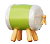

<ion-content class="ion-padding">
  <ion-refresher slot="fixed" (ionRefresh)="handleRefresh($event)">
    <ion-refresher-content></ion-refresher-content>
  </ion-refresher>
  <!-- Header -->
  <div class="d-flex align-items-center justify-content-between" style="position: relative; width: 100%; margin: 0;">
    <div class="d-flex align-items-center" style="width: auto; max-width: calc(100% - 30px); margin: 0; padding: 0;">
      <!-- Location Section -->
      <div (click)="navigateToPrayerTimes()" class="d-flex align-items-center location"
        style="padding: 10px; margin: 15px 0;">
        <ion-icon name="location-outline"
          style="font-size: 24px; margin: 0 10px 0 5px;  color: var(--ion-color-primary); vertical-align: middle;"></ion-icon>
        <span *ngIf="loaded; else skeletonLocation" style="font-weight: 500;">
          {{ currentLocation.length > 30 ? (currentLocation | slice:0:30) + '...' : currentLocation }}
        </span>
        <ng-template #skeletonLocation>
          <ion-skeleton-text [animated]="true" style="width: 150px;"></ion-skeleton-text>
        </ng-template>
      </div>
    </div>
    <!-- Notification Icon -->
    <div class="d-flex justify-content-end" style="position: absolute; right: 0; font-size: 24px;">
      <ion-icon name="notifications-outline" style="vertical-align: middle;"></ion-icon>
    </div>
  </div>

  <!-- Prayer Header Section -->
  <div class="prayer-header">
    <ion-row>
      <div style="display: flex; justify-content: center; align-items: center;">
        
      </div>
      <span *ngIf="loaded; else skeletonPrayerHeader">Mulakan hari anda dengan solat</span>
      <ng-template #skeletonPrayerHeader>
        <ion-skeleton-text [animated]="true" style="width: 200px;"></ion-skeleton-text>
      </ng-template>
      <ion-col class="text-end d-flex align-items-center">
        <div (click)="navigateToPrayerTimes()"
          style="width: 25px; height: 25px; border-radius: 50%; display: flex; align-items: center; justify-content: center; position: absolute; right: 0; margin-right: 10px;">
          <ion-icon name="chevron-forward-outline" style="font-size: 17px; vertical-align: middle;"></ion-icon>
        </div>
      </ion-col>
    </ion-row>
  </div>

  <!-- Current Time Section -->
  <div class="prayer-time">
    <ion-row>
      <ion-col>
        <span *ngIf="loaded; else skeletonDate">{{ currentHijriDate }}</span>
        <ng-template #skeletonDate>
          <ion-skeleton-text [animated]="true" style="width: 100px;"></ion-skeleton-text>
        </ng-template>
        <h1 *ngIf="loaded; else skeletonTime" style="white-space: nowrap;">{{ currentTime }}</h1>
        <ng-template #skeletonTime>
          <ion-skeleton-text [animated]="true" style="width: 150px;"></ion-skeleton-text>
        </ng-template>
        <p *ngIf="loaded; else skeletonRemaining">{{ remainingTime }}</p>
        <ng-template #skeletonRemaining>
          <ion-skeleton-text [animated]="true" style="width: 80px;"></ion-skeleton-text>
        </ng-template>
      </ion-col>
      <ion-col class="text-end">
        
        <ng-template #skeletonIcon>
          <ion-skeleton-text [animated]="true" style="width: 100px; height: 100px;"></ion-skeleton-text>
        </ng-template>
      </ion-col>
    </ion-row>

    <div style="border-bottom: 1px solid #ccc; margin: 15px 0;"></div>

    <!-- Prayer Times -->
    <ion-row>
      <ng-container *ngFor="let prayer of prayerNames">
        <ion-col *ngIf="prayer.toLowerCase() !== 'syuruk'">
          <p style="display: block; text-align: center; margin-bottom: 10px;">
            <b *ngIf="loaded; else skeletonPrayer" [ngStyle]="getPrayerStyle(prayer)">{{ prayer }}</b>
            <ng-template #skeletonPrayer>
              <ion-skeleton-text [animated]="true" style="width: 50px;"></ion-skeleton-text>
            </ng-template>
          </p>
          
          <ng-template #skeletonPrayerIcon>
            <ion-skeleton-text [animated]="true" style="width: 24px; height: 24px;"></ion-skeleton-text>
          </ng-template>
          <p *ngIf="loaded; else skeletonPrayerTime" [ngStyle]="getPrayerStyle(prayer)"
            style="display: block; text-align: center; margin-top: 10px;">
            {{ prayerTimes[prayer.toLowerCase()] }}
          </p>
          <ng-template #skeletonPrayerTime>
            <ion-skeleton-text [animated]="true" style="width: 50px;"></ion-skeleton-text>
          </ng-template>
        </ion-col>
      </ng-container>
    </ion-row>
  </div>

  <!-- Prayer Tracker -->
  <div class="prayer-tracker">
    <div class="prayer-tracker-header">
      <ion-icon name="alarm-outline" style="vertical-align: top; margin-bottom: 10px; font-size: 25px;"></ion-icon>
      <h5 style="display: inline-block; vertical-align: top;">Peringatan Solat</h5>
    </div>
    <ion-row class="tracker-icons" style="display: flex; justify-content: space-around; margin: 15px 0;">
      <ion-col (click)="toggleChecked(0)" style="text-align: center;">
        <ion-icon [name]="checked[0] ? 'checkmark-circle' : 'ellipse-outline'"
          style="font-size: 25px; margin-bottom: 10px; color: var(--ion-color-primary); vertical-align: middle;"></ion-icon>
        <span style="display: block; text-align: center;">Subuh</span>
      </ion-col>
      <ion-col (click)="toggleChecked(1)" style="text-align: center;">
        <ion-icon [name]="checked[1] ? 'checkmark-circle' : 'ellipse-outline'"
          style="font-size: 25px; margin-bottom: 10px; color: var(--ion-color-primary); vertical-align: middle;"></ion-icon>
        <span style="display: block; text-align: center;">Zuhur</span>
      </ion-col>
      <ion-col (click)="toggleChecked(2)" style="text-align: center;">
        <ion-icon [name]="checked[2] ? 'checkmark-circle' : 'ellipse-outline'"
          style="font-size: 25px; margin-bottom: 10px; color: var(--ion-color-primary); vertical-align: middle;"></ion-icon>
        <span style="display: block; text-align: center;">Asar</span>
      </ion-col>
      <ion-col (click)="toggleChecked(3)" style="text-align: center;">
        <ion-icon [name]="checked[3] ? 'checkmark-circle' : 'ellipse-outline'"
          style="font-size: 25px; margin-bottom: 10px; color: var(--ion-color-primary); vertical-align: middle;"></ion-icon>
        <span style="display: block; text-align: center;">Maghrib</span>
      </ion-col>
      <ion-col (click)="toggleChecked(4)" style="text-align: center;">
        <ion-icon [name]="checked[4] ? 'checkmark-circle' : 'ellipse-outline'"
          style="font-size: 25px; margin-bottom: 10px; color: var(--ion-color-primary); vertical-align: middle;"></ion-icon>
        <span style="display: block; text-align: center;">Isyak</span>
      </ion-col>
    </ion-row>
  </div>

  <!-- Qibla Compass -->
  <app-qibla-compass></app-qibla-compass>
</ion-content>